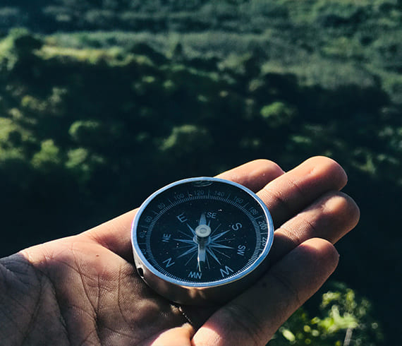

История клана. MilkyWay.
Уже более недели приезжий господин жил в городе, разъезжая по вечеринкам и обедам и таким образом проводя, как говорится, очень приятно время. Наконец он решился перенести свои визиты за город и навестить помещиков Манилова и Собакевича, которым дал слово.
Может быть, к сему побудила его другая, более существенная причина, дело более серьезное, близшее к сердцу... Но обо всем этом читатель узнает постепенно и в свое время, если только будет иметь терпение прочесть предлагаемую повесть, очень длинную, имеющую после раздвинуться шире и просторнее по мере приближения к концу, венчающему дело. Кучеру Селифану отдано было приказание рано поутру заложить лошадей в известную бричку; Петрушке приказано было оставаться дома, смотреть за комнатой и чемоданом. Для читателя будет не лишним познакомиться с сими двумя крепостными людьми нашего героя. Хотя, конечно, они лица не так заметные, и то, что называют второстепенные или даже третьестепенные, хотя главные ходы и пружины поэмы не на них утверждены и разве кое-где касаются и легко зацепляют их, — но автор любит чрезвычайно быть обстоятельным во всем и с этой стороны, несмотря на то что сам человек русский, хочет быть аккуратен, как немец. Это займет, впрочем, не много времени и места, потому что не много нужно прибавить к тому, что уже читатель знает, то есть что Петрушка ходил в несколько широком коричневом сюртуке с барского плеча и имел, по обычаю людей своего звания, крупный нос и губы. текст
